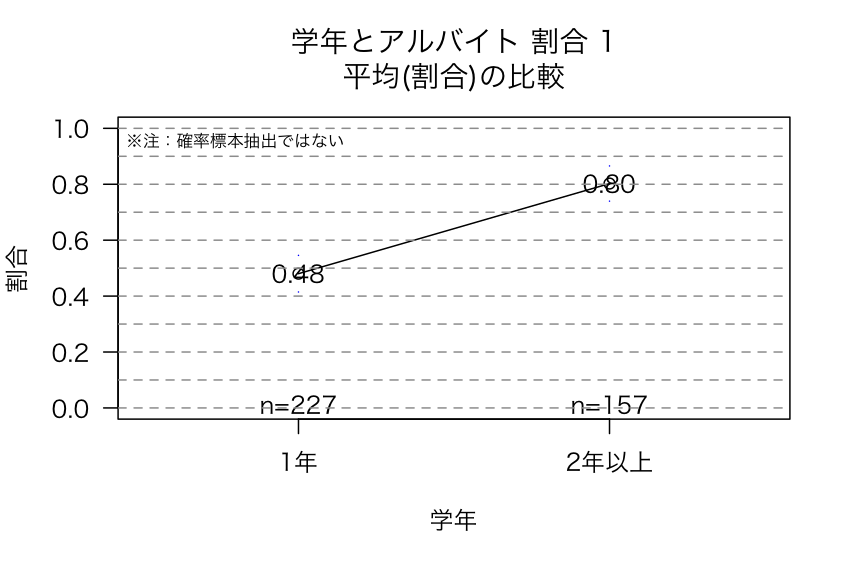

| 項目 | 内容 |
|---|---|
| 調査テーマ | 大学生の消費動向 |
| 実施時期 | 2012年 |
| 対象 | 母集団が不明 |
| 主に、たまたま協力が得られた社会学科学生 | |
| 調査方法 | 質問紙法・自記式調査法 |
| 標本サイズ | n=387 |
| 環境 | R |
図1: 学生意識調査2012 nu12
図2: 学年と課外活動 モザイクプロット
図3: 学年と課外活動 割合 1
図4: 学年と課外活動 割合 2 (部分表示)
図5: 学年とアルバイト モザイクプロット

図6: 学年とアルバイトの有無の割合 1
図7: 学年とアルバイトの有無の割合 2 (部分表示)
図8: 大学生活で最もお金をかけているもの